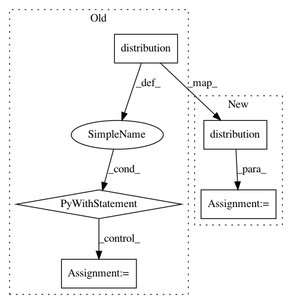

3b77f6b6c38fea6616cae10ca8e0c3a20782934a,contrib/go/tests/python/pants_test/contrib/go/subsystems/test_go_distribution.py,GoDistributionTest,assert_no_gopath,#GoDistributionTest#,31
Before Change
self.assertEqual(go_distribution.goroot, output.strip())
def assert_no_gopath(self):
with self.distribution() as go_distribution:
go_cmd = go_distribution.create_go_cmd(cmd="env", args=["GOPATH"])
self.assertEqual({"GOROOT": go_distribution.goroot, "GOPATH": ""}, go_cmd.env)
self.assertEqual("go", os.path.basename(go_cmd.cmdline[0]))
self.assertEqual(["env", "GOPATH"], go_cmd.cmdline[1:])
self.assertRegexpMatches(str(go_cmd), r"^GOROOT=[^ ]+ GOPATH= .*/go env GOPATH")
self.assertEqual("", go_cmd.check_output().strip())
def test_go_command_no_gopath(self):
self.assert_no_gopath()
def test_go_command_no_gopath_overrides_user_gopath_issue2321(self):
After Change
self.assertEqual(go_distribution.goroot, output.strip())
def assert_no_gopath(self):
go_distribution = self.distribution()
go_cmd = go_distribution.create_go_cmd(cmd="env", args=["GOPATH"])
self.assertEqual({"GOROOT": go_distribution.goroot, "GOPATH": ""}, go_cmd.env)
self.assertEqual("go", os.path.basename(go_cmd.cmdline[0]))
In pattern: SUPERPATTERN
Frequency: 3
Non-data size: 5
Instances
Project Name: pantsbuild/pants
Commit Name: 3b77f6b6c38fea6616cae10ca8e0c3a20782934a
Time: 2016-09-12
Author: benjyw@gmail.com
File Name: contrib/go/tests/python/pants_test/contrib/go/subsystems/test_go_distribution.py
Class Name: GoDistributionTest
Method Name: assert_no_gopath
Project Name: pantsbuild/pants
Commit Name: 3b77f6b6c38fea6616cae10ca8e0c3a20782934a
Time: 2016-09-12
Author: benjyw@gmail.com
File Name: contrib/go/tests/python/pants_test/contrib/go/subsystems/test_go_distribution.py
Class Name: GoDistributionTest
Method Name: test_go_command_gopath
Project Name: pantsbuild/pants
Commit Name: 3b77f6b6c38fea6616cae10ca8e0c3a20782934a
Time: 2016-09-12
Author: benjyw@gmail.com
File Name: contrib/go/tests/python/pants_test/contrib/go/subsystems/test_go_distribution.py
Class Name: GoDistributionTest
Method Name: test_bootstrap